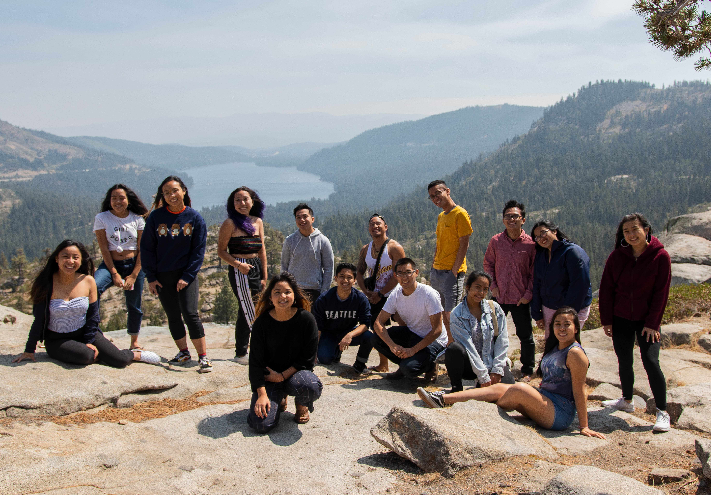

Pilipinx Academic Student Services is an entirely student-run organization formed in 1985 to address the educational concerns of Pilipinx students in pursuit of higher education. PASS attempts to remedy the lack of representation among the University's student population with respect to the growing Pilipinx population of California. The organization focuses primarily on increasing the educational opportunities available to these students through the implementation of various informational resources, support, and referral services. We provide programs targeted specifically toward the recruitment of high school and community college students, as well as programs for the retention of the University's registered students. PASS endeavors to maintain its commitment to the surrounding communities and to the University through efforts to preserve educational interest.
PASS is composed of 3 components:
Recruitment
Getting underrepresented Pilipinx students into higher education.
Retention
Making sure those students are successful once they get there.
Internal
Handling all the essential organizational & financial support.
I'm an undergraduate student at Cal. How can I get involved?
As an undergraduate student, you can get involved by signing up for our Internship Program for an in-depth shadowing experience underneath our staff. If you would like to be involved on a event-by-event basis, sign up to be a General Volunteer for the semester!
Our Internship Program starts at the beginning of every semester! Please email our Internal Affairs Director, Angelica Santos for more info.
I'm a high school student. How can I visit campus for a program or get PASS to come to my school?
We frequently have high school students visit our campus to learn about what it's like to attend college here at UC Berkeley and how to apply to college. Please email our SHADOW Coordinator, Raquel Navarro Calara for more info.
If you would like PASS to visit your high school and give a presentation college & the application process, please email our Outreach Coordinator, Ryan Nuqui for more info.
I'm a community college student looking to transfer to a 4-year institution. What can PASS do for me?
We have both on-campus and off-campus programs for students looking to transfer. Please email our Transfer Recruitment Coordinator and our Transfer Retention Coordinator, Lorraine Pacilan and Christian Guerrero, for more info.

Donate
PASS needs your help raising money so that we can stay within budget for all of our upcoming events in the community. With your help we'll be able to reach out to more Pilipinx/Pilipinx-American, under-resourced, and marginalized students. We'll be able to provide them with the support needed to pursue higher education and succeed at Cal.
If you would like to asisst PASS by donating, click here
Contact Us
pass.ext.relations@gmail.com
410 Martin Luther King Student Union
2495 Bancroft Way, Berkeley CA 94720
Proud to Be Pinay: Biyuti Space
GSAC is happy to invite you to the first Biyuti Space* of the semester on Sunday, September 30th from 11-1pm! We’ll be sharing food and discussing our experiences of being queer and what it means to exist as both Pilpinxs and queer folk. Come have a delicious meal, interact with your fellow Pinxys, and maybe learn something new about you and your place in the Pinxy community :)
*Biyuti Space is a safe and closed social space for queer-identifying Pilipinxs. It is also a space that aims to spread the awareness on issues pertaining to Pinxys through interactive activities, dialogues, and discussions.
Learn more here!
Date: Sunday, September 30, 2018 at 11 AM – 1 PM
Contact: Justin Dela Cruz
Outreach and Transfer Mentorship Workshop
During this semester, PASS will be visiting middle schools, high schools, and community colleges in the Bay Area to present to students about higher education and provide mentorship for transfer students. Through these programs, we will provide information regarding the different pathways into higher education, how to apply to college (especially focusing on writing those Personal Insight Questions), and more.
However, information comes second. What we hope to accomplish through these programs is to let students hear straight from volunteers like us, who were in their position just several years ago, to ask questions about applying to college and navigating through higher education. In short, we want to emphasize OUR STORIES and OUR EXPERIENCES to these students. No matter what your background us, you have an important story to tell and for the students that we outreach to, it’s an important story for them to hear. Whether that story involves the process of transferring, being a student of color, or coming from an underresourced school (and many other things), these stories can be very empowering.
Outreaching and mentorship are very meaningful experiences where not only will you be able to help our community by empowering our youth to pursue higher education, but you’ll also have a lot of fun making friends with other volunteers and even learn more about yourself as you share your experiences.
Filipino Empowerment Day (FED) is BACK and BETTER and is LOOKING FORWARD to your collaboration to educate and empower students through academic, cultural, and political awareness! Every year, this program is made possible by the endless support and collaboration of our sister and sibling campuses & organizations.
In the years prior, this event has been a collaboration between UC Berkeley PASS, UC Berkeley PAA, UC Davis Bridge, UC Santa Cruz FSA, CSU East Bay PASA, Stanford PASU, USF Kasamahan, and SFSU. This year, we welcome ALL universities, community colleges, and community organizations who are interested to collaborate and work together to serve the greater Pilipino community in the form of this program. There are many ways to get involved, so please SHARE this event with your respective organization and help make this movement be as amazing as it can be!
Learn more here!
Date: October 14, 2018
Contact: Kevin Bradley Paule
Night with the Seniors: We're All in this Together
Night With the Seniors (NWTS) is an annual senior-produced banquet hosted by the Pilipino Academic Student Services (PASS), that celebrates the journey and accomplishments of the Pilipinx Senior class. It's a time to promote networking, community building, and sharing our success, struggles, and experiences with UC Berkeley's younger classes. Our purpose is to retain, empower, and encourage younger students to succeed in their pursuit of higher education.
The theme for this year is “We’re All in This Together” inspired by the Disney Channel Original Movie Trilogy, High School Musical. Before getting where we are Right Here Right Now, we had to Bop to the Top to get into UC Berkeley. And as we arrived to Cal for the very first time it definitely felt like The Start of Something New. Sometimes our time here has made us want to Scream or Walk Away, but more importantly many of us have learned that with the friendship and support we’ve built through our community it has also been Fabulous, and sometimes even exactly What We’ve Been Looking For. This celebration is meant to commemorate all the memories we’ve shared and to remind everyone that as long as we have each other we can continue to grow and thrive through learnings, struggles and love Everyday.
Outreach events revolve mainly around visiting schools to prepare high school students for college and the application process.
EVENT
DESCRIPTION
ESTIMATED DATE
SoCal Outreach
Week-long outreach to schools in Southern California
Winter Break
Bay Area Outreach
Single-day outreaches to schools to nearby schools in the Bay Area
Variable
Central Cal
Week-long outreach to schools in Central California
Spring Break
Recruitment
Recruitment events revolve mainly around inspiring Pilipinx students to pursue higher education.
EVENT
DESCRIPTION
ESTIMATED DATE
Filipino Empowerment Day
Conference to foster academic, cultural, & political awareness
2/25/17
Senior Weekend
Overnight Stay Program for potential Pilipinx Cal Bears
April
SHADOW
SHADOW events revolve mainly around bringing students on campus to learn more about higher education.
EVENT
DESCRIPTION
ESTIMATED DATE
SHADOW Weekend
Overnight stay weekend where students shadow mentors on campus
Mid Fall
SHADOW Conference
Variable-themed conference that involves student presence on campus
Mid Spring
Youth Mentorship
Youth Mentorhip events revolve mainly around engagement with the Galing-Bata bilingual school and its surrounding community.
EVENT
DESCRIPTION
ESTIMATED DATE
Youth Mentorship
Enriching after-school mentorship of students at Galing-Bata bilingual school
Semester-Long
YM Shadow
Galing-Bata students come to the Berkeley campus for a day of empowerment
Late Fall & Late Spring
SoMa Ethnograpghic Tour
Co-occuring with Pilipinx American History Month - an engagement with the rich Pilipinx hxstory of the South of Market district
October
ASAMS 197-012: Education in Pilipinx/Pilipinx-American Communities
Field studies seminar course that complements the mentorship program that explores a variety of topics affecting the Pilipinx community
Semester-Long
Advocacy
Advocacy events revolve around raising awareness of community issues both in and out of Berkeley.
EVENT
DESCRIPTION
ESTIMATED DATE
Kasama Night
Cultural fundraising event for our BDSP scholarship
Late Fall
PHIAD (Pilipinx History, Identity, and Decolonization)
A seminar course on Pilipinx American narratives, hxstory, and culture
Spring
GSAC
GSAC events revolve aroudn creating a safe space for Pilipinx LGBTQIA+ to grow and develop.
EVENT
DESCRIPTION
ESTIMATED DATE
Pinay Brunch
Aims to spread awareness on Pilipina issues and issues pertaining to womxn of color through interactive dialogues and discussions
Variable
Biyuti Space
Discussions that range on a variety of issues but is grounded in validating the beauty in all identities
Variable
GSAC Retreat
Weekend-long retreat for the space to grow together with discussion and reflection
>Mid Spring
PASO
PASO events involve introducing Cal students to the Pil community and creating connections within it
EVENT
DESCRIPTION
ESTIMATED DATE
Pilipinx American Student Orientation
Orientation for new Cal Bears to introduce them to the Pilipinx Community here at Cal
Start of Fall & Spring
PASO Class (PASOC)
Semester-long class aimed towards building a sense of community and heritage within Cal
Fall
Mixers
Socials designed to increase friendships and community between different college years
Spring
PASOC Through the Years
A celebration of the work done by previous PASOC cohorts
Late Spring
Retention
Retention events revolve around helping students feeling welcomed and retained at Cal
EVENT
DESCRIPTION
ESTIMATED DATE
Night with the Seniors
A night filled with memories and acknowledgement of the current Senior class
2/25/17
Pil Grad
A celebration for graduating Seniors in the Pilipinx Community
Late May
Transfer
Transfer events revolve around helping students transfer to 4-year institutions and to provide suppor to transfers here at Cal
EVENT
DESCRIPTION
ESTIMATED DATE
Transfer Picnic
Social meant to create connection between the community and transfer students
Variable
Transfer Shadow Day
A day for community college students to visit Cal and be guided by students on campus
Spring
Transfe Outreach
Outreach to various, nearby community colleges
Variable
Transfer Weekend
Overnight Stay Program for admitted transfer students to experience Cal for a weekend
Late Spring
Executive
Executive events revolve around general club and community well-being
EVENT
DESCRIPTION
ESTIMATED DATE
General Retreat
Retreat for community members to grow together and better understand eachother
Mid Spring
External
External Relations events revolve around networking and professionalism.
EVENT
DESCRIPTION
ESTIMATED DATE
FASTERCON
Networking event between professionals and the Pilipinx community. Sponsored by Filipino Americans in Silicon Valley Tech (FASTER).
October
Pathways
A graduate student panel aimed at increasing Pilipinx interest in higher than higher education.
November
Internal
Internal events revolve around the enrichment of the Internship Program.
EVENT
DESCRIPTION
ESTIMATED DATE
PASS Development Day (PDD)
PDD strives to build a foundation between interns and staffers.
Beginning of Fall and Spring semester
Internship Program
An opportunity to shadow staff members and interactively engage in our work.
Ongoing, Both Semesters
Executive Director
Richard Pulvera
The Executive Director maintains the effectiveness of staff as a whole and is the main liaison between PASS and our on-campus partners.
Hi! I'm Richard Pulvera and I'm the Executive Director for PASS 34! I'm originaly from Oceanside, CA but I've definitely fallen in love with the Bay. I'm currently a fourth year double majoring in Molecular & Cell Biology and Public Health with career goals of becoming a pediatrician! Outside of PASS, I've held internships at UCSF Benioff Children's Hospital Oakland in their Department of Community Health and Engagement as well as at the State of California with a state agency called OEHHA.
Exploring is a lifestyle. Food is a language. Cooking is a hobby. Caffeine is an addiction. I'm down for conversations over coffee of boba so let's talk! Also down for hiking; gotta enjoy the outdoors! @rblapulvera
Recruitment Director
Kevin Bradley Paule
The Recruitment Director is in charge of all things related to the recruitment of Pilipinx students in higher education.
Hello everyone, my name is Kevin Bradley Paule and I am a 4th year Media Studies major with a double minor in South & Southeast Asian Studies and Public Policy. This year with PASS 34, I have the honor of working with you all as the Recruitment Director. As director, I work closely with the SHADOW, Outreach, Youth Mentorship, and Transfer Recruitment efforts. I also work with the other directors on Staff to ensure a cohesive, meaningful, and fun-filled working environment for our organization, staff, and community. I have an exciting year planned out for the community this year and would love to take you all on this amazing journey to Filipino Empowerment Day (Fall 2018), Senior Weekend (Spring 2019), and much more in between! I am passionate about collaborative community organizing, conversations regarding sex positivity and LGBTQ+ advocacy, movement & activism through visual arts, and Filipino representation in mass media culture. Don’t be shy and feel free to ask me about anything and everything! You can reach me at recruitment@pass.berkeley.edu
ISANG BAGSAK!
Retention Director
Alyssa Gonzaga
The Retention Director is in charge of helping Pilipinx students retain themselves on campus and ultimately graduate.
Hello all! My name is Alyssa, I am a senior studying Political Science and minoring in Asian American and Asian Diaspora Studies and Public Policy. I grew up in Quezon City, Philippines and southeast San Diego, CA #619.
I love to dance, journal, and watch animated shows. I hope in the future that I will be pursuing either a JD, MPA, or MPP but for now, I'm here finishing my last year at Cal strong with the community I love, doing what I love most.
As Retention Director, I hope that students feel supported, and that we as a community can keep administration accountable to support our beautiful, powerful, and magical 3% Pils at Cal.
Internal Affairs Director
Angelica Santos
The Internal Affairs Director is in charge of the Internship Program and is the head of the logistical side of PASS.
Hello! My name is Angelica Santos and I am PASS 34's Internal Affairs Director. I am a third year majoring in Environmental Science and Southeast Asian Studies. As the Internal Affairs Director, I manage PASS's internship program and promote a safe community within the PASS Space. Outside of PASS, I love eating, watching TV, cooking and baking, bullet journaling, and hiking!! My favorite meal of the day is a photogenic brunch. If you have any Netflix recommendations, or just want to get cute food and talk, let me know!
Internal events revolve around the enrichment of the Internship Program.
EVENT
DESCRIPTION
ESTIMATED DATE
PASS Development Day (PDD)
PDD strives to build a foundation between interns and staffers.
Beginning of Fall and Spring semester
Internship Program
An opportunity to shadow staff members and interactively engage in our work.
Ongoing, Both Semesters
Operations Coordinator
Diana-Lynn Garza
The Operations Coordinator makes sure that PASS' programs are properly funded, organized, and sustainable.
Hello uwu~ My name is Diana and I am the Operations Coordinator for PASS 34. I am a second year majoring in Chemical Biology #COC. I was born in Michigan but raised in Socal. My goal at the end of all this edumacation is to become a pharmacist hehe. In my free time I love to sleep, watch anime/netflix, and satisfy my sweet tooth. I'm a shy girl, but feel free to reach out to me if you wanna talk about chemistry//life//food//literally anything!
External Relations Coordinator
Nikka S. Sandoval
The External Relations Coordinator maintains PASS' relationships with people & organizations outside of campus.
Hello! My name is Nikka and I am PASS 34's External Relations Coordinator. I am a second year studying Genetics and Plant Biology (yaay cnr). My Myers-Briggs personality type is ENFP! My love languages are quality time, words of affirmation and acts of services. I enjoy getting food with friends, traveling with my family and watching brooklyn nine-nine/friends/criminal minds. I love listening to music and making playlists so check out my spotify! i'm too school for cool so you can catch me studying @ vlsb/doe/mlk (pls hangout w me so my too cool for school side can come out ☺)
Public Relations Coordinator
Franco Achacoso
The Public Relations Coordinator maintains PASS' media presence, manages the PASS website, and documents/celebrates PASS events & hxstory.
Hey everyone ! My name is Franco and I'm PASS 34's Public Relations Coordinator! I am a second year studying Data Science.
I come from Los Angeles, California (Culver City if you're from West LA!). In my free time, I like to do photography, play Avalon and osu!, and watch anime. Outside of PASS, I'm current an Events and Marketing Officer for Cal Animage Alpha, UC Berkeley's own anime club(you should check it out if you're a weeb)!
If you're interested in learning more about how to get involved in PASS, more about photography, more about coding, or anything at all!, you can email me or send me a DM on my IG @44shots.
Gender & Sexuality Awareness Coordinator
Justin Dela Cruz
The Gender & Sexuality Awareness Coordinator provides a space for LGBTQ+ students to have meaningful conversations and feel like they belong on campus.
Hi! I'm Justin Dela Cruz and I'm really honored to say that I'm PASS 34's Gender and Sexuality Awareness Component (GSAC) Coordinator! I'm originally from Lake Elsinore, CA (Riverside County in SoCal) but I've also fallen in love with the Bay. I'm currently a second year majoring in Asian American and Asian Diaspora Studies with a minor in Public Policy.
I consider myself to be a calm individual, but don't confuse that with being shy. Let's grab a cup of coffee together and talk about anything!
Advocacy Coordinator
Jenina Yutuc
The Advocacy Coordinator is responsible for keeping Pilipinx students aware of key issues and forming relationships with allied organizations.
I'm Jenina and I am PASS 34’s Advocacy Coordinator. As the advocacy coordinator, I would like to be rooted in three sequential pillars: cognizance, visibility, and action. My pronouns are she/her/hers. I was born and raised in Pampanga, Philippines. It is my mother tongue and the purest sense of what ‘home’ is to me, so a lot of the work I do is rooted in giving back to the province that raised me. I am intending to double major in Public Health and Southeast Asian Studies, with a minor in GPP on a Pre-Pharm track. I am also passionate about the intersections of design and photography with social justice issues, and because of such I am excited to create digital projects (photography and videography) that converge activism and creativity! With this position and with the help of my future interns, I hope to utilize our privileges as Berkeley students here in the United States to serve not only our nearby communities, but those back home in the Philippines. Outside of academics and organizations, I am currently obsessed with color theory and color schemes (Pantone is life) and stalking the design account @presentandcorrect on twitter. Feel free to message me if you need anything under the sun @jeninayutuc@berkeley.edu or send me a DM on my instagram @jeninayutuc. I am excited for all the dialogue we will have and the work we will create :) Kakayanin natin to! [We can do this!]
PASO Coordinator
Jillian Kristen Perez
The PASO Coordinator is in charge of PASO (Pilipinx-American Student Orientation) & its corresponding DeCal/mixers.
Hello!! My name is Jillian Perez. I am a 2nd year majoring in Molecular and Cellular Biology-Neuroscience and minoring in Education. I am from San Lorenzo, California (which is literally classified as a village oop). I am honored to be the Pilipinx American Student Orientation (PASO) Coordinator for PASS Staff 34.
A little bit about me is that... Fun fact, i play 12 instruments. Do i play them well..? Uhm... Hahah but besides that, I'm a huge lover of music--all types too!! So if you ever have any new musical suggestions, send them my way.
Some other things like to do is read, watch youtube videos, drink tea, play with my hair, eat noodles, and make memories with my friends + family.
Reach out to me if you ever need aid navigating around Cal and its resources!! Also, feel free to reach out if you ever need someone to listen, someone to talk to, or just want to be friends! I love meeting new folx (:!
Transfer Retention Coordinator
Christian Guerrero
The Transfer Retention Coordinator works to empower new and continuing Pil transfer students at Cal through wellness events and community-building programming.
Hey y'all, my name is Christian and I'm your Transfer Kuya. I was born in the Philippines and moved to the US when I was 12—growing up mainly in California. I didn't do that well in school at first, especially as a young immigrant brown man trying to find his place in America. I eventually found Ethnic Studies at Skyline College and that changed my life. In 2017, I transferred into Cal in 2017—majoring in Social Welfare—and I'm this year's Transfer Retention Coordinator.
My goal is to empower, support, and expand the Pil-transfer community so that there's more engagement and leadership within the Pil community. I do a lot of work though self-reflection and creative activities. Because I like doing them as well, I encourage others to explore singing, poetry, working out, jiu jitsu, and any other creative form of expression. Reach out to me, hang with my dog, and let's record a podcast. Let's claim space on this campus and bring resources back to our communities fam.
Outreach Coordinator
Ryan Nuqui
The Outreach Coordinator plans and leads outreach trips to high schools all around California regarding college application process and atmosphere.
Hello!
My name is Ryan Nuqui and I am the High School & Transfer Outreach Coordinator for PASS 34. I am a second year currently studying Computer Science and Mathematics with an interest in CalTeach.
In my free time, I enjoy hanging out with friends whether that be eating together, going out, or just staying home and playing board games. For PASS, I am fortunate enough to be able to participate in community work, specifically through helping organize outreaches in the Bay Area.
Feel free to reach out to me if you're interested in participating in outreaches, volunteering for PASS in general, or anything else really!
SHADOW Coordinator
Raquel Navarro Calara
The SHADOW Coordinator brings students to the Berkeley campus for mentorship and education about the college application process and atmosphere.
Hi everyone! My name is Raquel Calara and I'm from Pittsburg, California. I am a third year majoring in Social Welfare and minoring in Public Policy. This year, I have the honor of serving the community as the SHADOW Coordinator for PASS 34. Outside of PASS, I love being around people and I'm super passionate about the arts and community organizing. If you want to talk about anything at all, please feel free to reach out to me; I love meeting new people! We can talk over a cup of coffee/boba or food! :~)
YM Coordinator
Unfilled
The Youth Mentorship Coordinator facilitates an active relationship with the Galing Bata after-school program and the surrounding SoMa community.
The Youth Mentorship Coordinator position is currently unfilled. PASS maintains committed to its partnership with the Galing Bata After-School program and will continue to support mentors who would like to participate in the program. We look forward to potentially filling this position in the near future.
Transfer Recruitment Coordinator
Lorraine Pacilan
The Transfer Recruitment Coordinator outreaches to and brings community college students on campus to discuss the importance of higher education, the college application process and atmosphere, and provide mentorship.
Hey y'all! I'm Lorraine Pacilan and I'm the Transfer Recruitment Coordinator for PASS 34! I'm a Spring transfer from Moorpark College studying Economics here at Cal. I'm from Northridge, CA and I love eating and sleeping. My favorite things to eat are sushi, Filipino food, nachos, and chocolate chip cookies. On my spare time, I like to explore the city, rewatch all HSM movies, and visit beautiful viewpoints. I'm shy but feel free to talk to me about the transfer experience, destigmatizing community college, or we can just hang out! <3